結構動力分析與耐震設計（SD）｜命題大綱 SD-U3-2｜影片講義
隔減震原理
影片長度 14:48 ・ 14 章 ・ 31 段 ・ 示範建築 W＝12,000 tf 八層樓貫穿全片（LRB／FPS／FVD／BRB／TMD）
隔震用「週期」把力打下來，用「阻尼」把位移收回來
點各章標題旁的 ▶ 按鈕可直接跳到影片該段。
01底層邏輯：兩個旋鈕
全單元的一句話；加速度（力）與位移（代價）是同一個矛盾的兩端影片 0:19
隔減震這個單元，公式看起來很多，但底層邏輯只有一句話：隔震用週期把力打下來，用阻尼把位移收回來。整個單元都在處理同一個矛盾——加速度（也就是力）和位移（也就是代價）之間的平衡。
全片用同一棟建築貫穿：
| 項目 | 數值 |
|---|
| 建築 | 八層樓，總重 \(W = 12{,}000\ \text{tf}\)，固定基礎週期 \(T_{fix}=0.80\ \text{s}\) |
| 設計譜 | 平台段 \(S_{DS}=0.8\)，轉角週期 \(T_0=0.6\ \text{s}\)，等速度段 \(S_a = 0.48/T\) |
| 未隔震 | 0.8 s 落在等速度段：\(S_a = 0.600\,g\)，基底剪力 \(V = 7{,}200\ \text{tf}\)，\(V/W = 60\%\) |
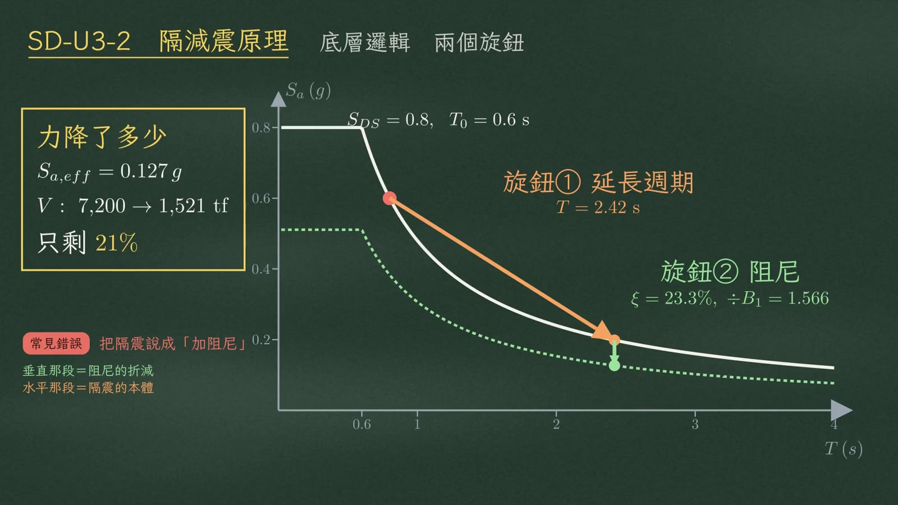
橘箭頭＝旋鈕① 延長週期（沿 5% 譜往右）；綠虛線／綠箭頭＝旋鈕② 阻尼（÷B1 垂直往下）影片 1:24
加隔震只動兩個旋鈕：
- 旋鈕① 延長週期：沿著 5% 的譜，把工作點往右搬到 \(T = 2.42\ \text{s}\)。
- 旋鈕② 阻尼：等效阻尼比 \(\xi = 23.3\%\)，整條譜除以 \(B_1 = 1.566\)，往下壓。
最後 \(S_{a,eff}\) 只剩 \(0.127\,g\)，\(V\) 從 7,200 降到 1,521 tf，只剩兩成一。
常見錯誤把隔震說成「加阻尼」。阻尼只是圖上那段垂直的折減，水平那段才是隔震的本體。
02代價：位移
但延長週期一定要付代價。在等速度段，加速度和週期成反比，位移卻和週期成正比。週期變 3 倍，力降成 1/3，\(S_a\) 從 0.600 降到 0.198；同一張譜上，位移卻從 9.5 cm 漲到 28.8 cm。
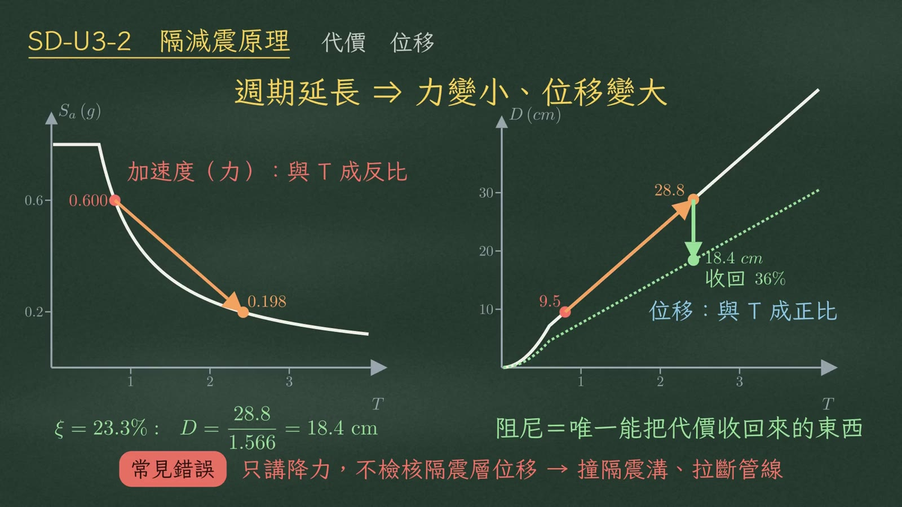
左：力與 T 成反比（0.600→0.198）；右：位移與 T 成正比（9.5→28.8 cm），綠虛線 ÷B1 收回到 18.4 cm影片 2:10
阻尼是唯一能把代價收回來的東西。阻尼比 23.3%，位移除以 1.566：
$$\xi = 23.3\%:\quad D = \frac{28.8}{1.566} = 18.4\ \text{cm}\qquad(\text{收回約三成六})$$
常見錯誤只講隔震降低地震力，卻不檢核隔震層位移。位移不夠，就會撞擊隔震溝、拉斷管線。
03串聯彈簧：為何能當單自由度
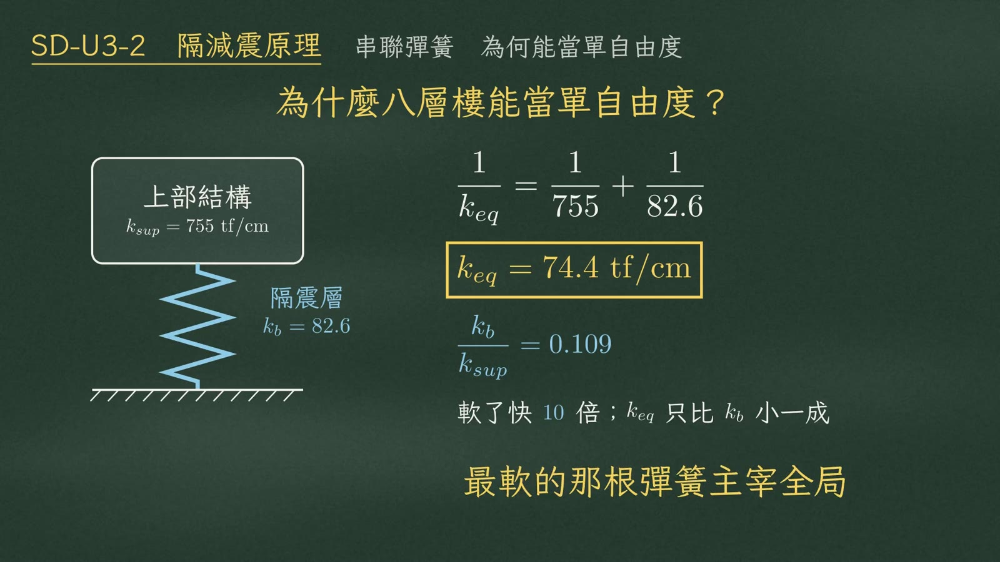
上部結構 \(k_{sup}\) 與隔震層 \(k_b\)（藍）串聯，勁度倒數相加影片 3:06
為什麼一棟八層樓，可以當成單自由度來算？因為隔震層和上部結構是串聯。上部結構勁度 \(k_{sup} = 755\ \text{tf/cm}\)，隔震層 \(k_b\) 只有 82.6，軟了快 10 倍。串聯是勁度倒數相加：
$$\frac{1}{k_{eq}} = \frac{1}{755} + \frac{1}{82.6}\quad\Rightarrow\quad k_{eq} = 74.4\ \text{tf/cm},\qquad \frac{k_b}{k_{sup}} = 0.109$$
\(k_{eq}\) 只比 \(k_b\) 小一成。
重點最軟的那根彈簧主宰全局。
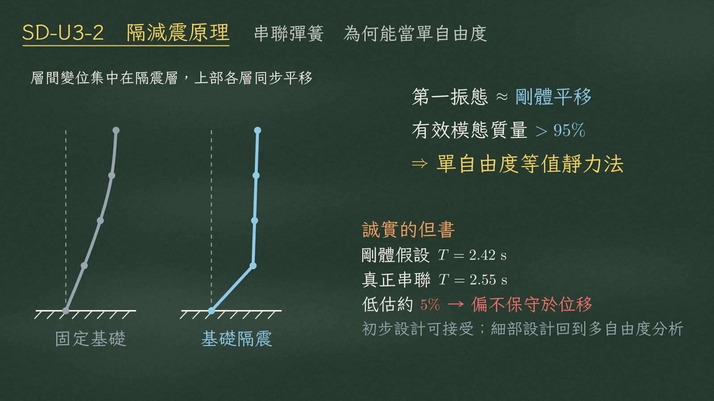
灰：固定基礎變形曲線；藍：基礎隔震——變位集中在隔震層，上部近似剛體平移影片 3:35
後果是：層間變位幾乎全部集中在隔震層，上部各層同步平移，第一振態近似剛體，有效模態質量超過 95%，所以可以用單自由度的等值靜力法。
誠實的但書當剛體算 \(T = 2.42\ \text{s}\)，真正串聯是 \(2.55\ \text{s}\)，低估約 5%，偏不保守於位移；初步設計可接受，細部設計要回到多自由度分析。
04等效線性化：四條公式
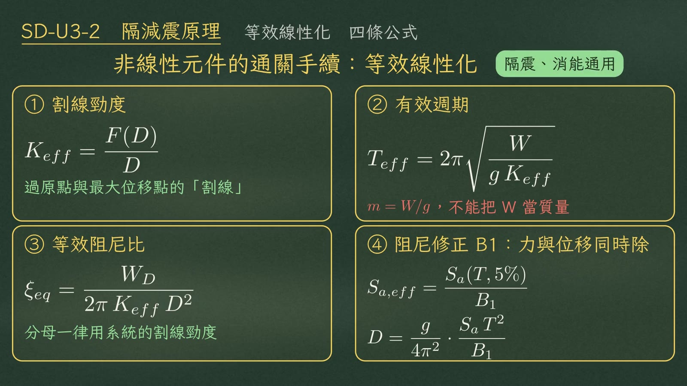
非線性元件的通關手續：四張公式卡（隔震、消能通用）影片 3:57
隔震支承和阻尼器都是非線性元件，通關手續叫等效線性化，四條公式：
| # | 公式 | 要點 |
|---|
| ① 割線勁度 | \(K_{eff} = \dfrac{F(D)}{D}\) | 一定要過原點和最大位移點 |
| ② 有效週期 | \(T_{eff} = 2\pi\sqrt{\dfrac{W}{g\,K_{eff}}}\) | 質量是 \(W/g\) |
| ③ 等效阻尼比 | \(\xi_{eq} = \dfrac{W_D}{2\pi\,K_{eff}\,D^2}\) | 分母一律用系統的割線勁度 |
| ④ 阻尼修正 | \(S_{a,eff} = \dfrac{S_a(T,5\%)}{B_1},\ \ D = \dfrac{g}{4\pi^2}\cdot\dfrac{S_a T^2}{B_1}\) | 阻尼比不是 5% 時查 \(B_1\)，力和位移同時除以 \(B_1\) |
陷阱題目給的是重量 \(W\)，質量是 \(W/g\)，千萬不能把 \(W\) 直接當質量代入。
這四條，隔震、消能都通用。
05LRB：雙線性迴圈
先看鉛心橡膠支承，LRB。它的一切都寫在這個平行四邊形迴圈裡：割線給勁度，面積給阻尼。四個常數：
| 常數 | 數值 |
|---|
| 初始勁度 \(k_0\) | 500 tf/cm |
| 降伏後勁度 \(k_d\) | 50 tf/cm |
| 勁度比 \(\alpha = k_d/k_0\) | 0.1 |
| 特徵強度 \(Q_d\)（迴圈在 \(D=0\) 的截距） | 600 tf，取 5%W |
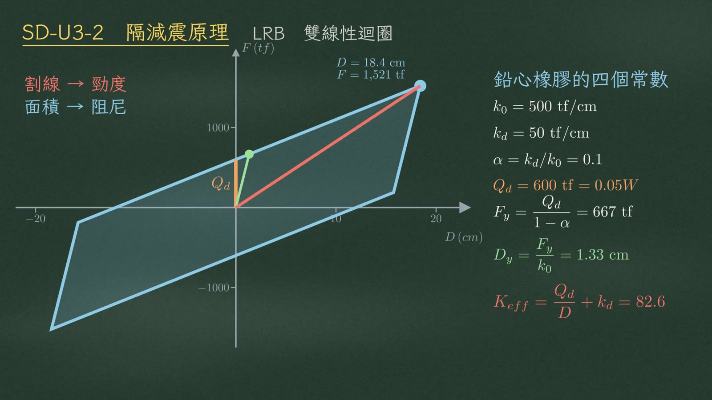
橘＝\(Q_d\) 截距；綠點＝降伏點；藍點＝最大點；紅線＝割線 \(K_{eff}\)影片 4:46
$$F_y = \frac{Q_d}{1-\alpha} = 667\ \text{tf},\qquad D_y = \frac{F_y}{k_0} = 1.33\ \text{cm}$$
定案位移 18.4 cm 時，回復力 1,521 tf，割線勁度：
$$K_{eff} = \frac{Q_d}{D} + k_d = 82.6\ \text{tf/cm}$$
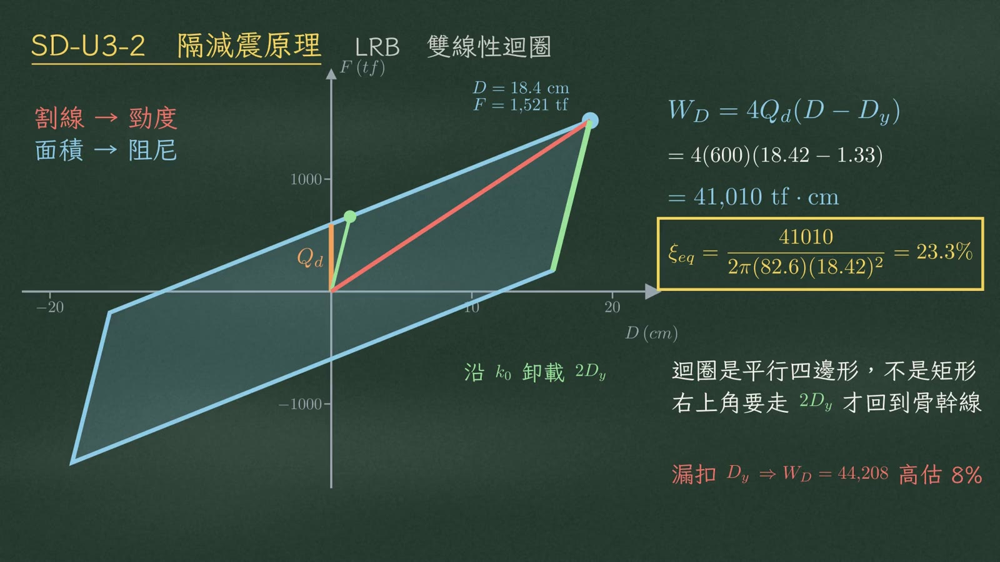
迴圈面積 \(W_D\) → 阻尼比 23.3%；綠線＝沿 \(k_0\) 卸載走 \(2D_y\)影片 5:13
$$W_D = 4Q_d(D-D_y) = 4(600)(18.42-1.33) = 41{,}010\ \text{tf}\cdot\text{cm}$$
$$\xi_{eq} = \frac{41010}{2\pi(82.6)(18.42)^2} = 23.3\%$$
為什麼要扣 \(D_y\)？迴圈是平行四邊形，不是矩形，右上角要沿 \(k_0\) 卸載，走 \(2D_y\) 才回到另一條骨幹線。
常見錯誤漏掉 \(D_y\) 這段，\(W_D\) 會變成 44,208，高估大約 8%。
06割線，不是切線
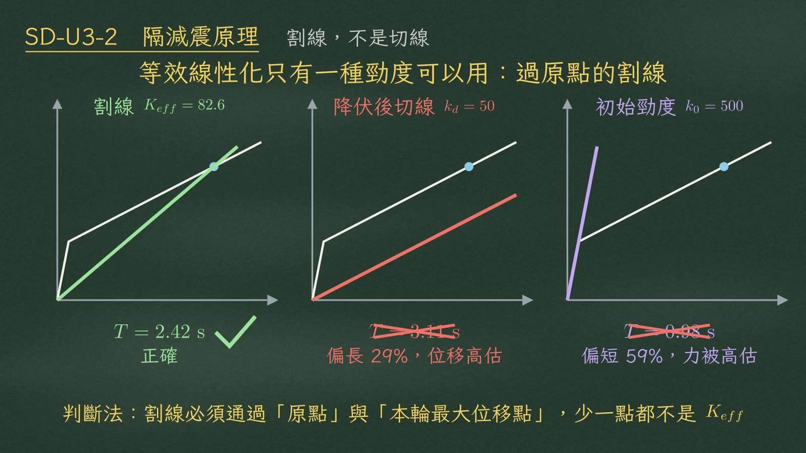
三種勁度取法：只有過原點的割線正確影片 5:47
等效線性化只有一種勁度可以用：過原點的割線。
| 取用的勁度 | 週期 | 結果 |
|---|
| 割線 \(K_{eff} = 82.6\) | 2.42 s | ✔ 正確 |
| 降伏後切線 \(k_d = 50\) | 3.11 s | ✘ 偏長 29%，位移高估 |
| 初始勁度 \(k_0 = 500\) | 0.98 s | ✘ 偏短 59%，力被高估 |
判斷法割線必須通過「原點」和「本輪迭代的最大位移點」，少一點都不是 \(K_{eff}\)。
07FPS：摩擦單擺
第二種隔震支承，摩擦單擺，FPS。滑動面是半徑 \(R\) 的球面，像一個倒單擺。回復力來自幾何：\(W\cdot D/R\)；阻尼來自摩擦：\(\mu W\)。本例 \(R = 220\ \text{cm}\)、\(\mu = 0.06\)，位移 15.5 cm 時：
$$\frac{12000\times15.45}{220} = 843,\qquad \mu W = 0.06\times12000 = 720,\qquad F = 843+720 = 1{,}563\ \text{tf}$$
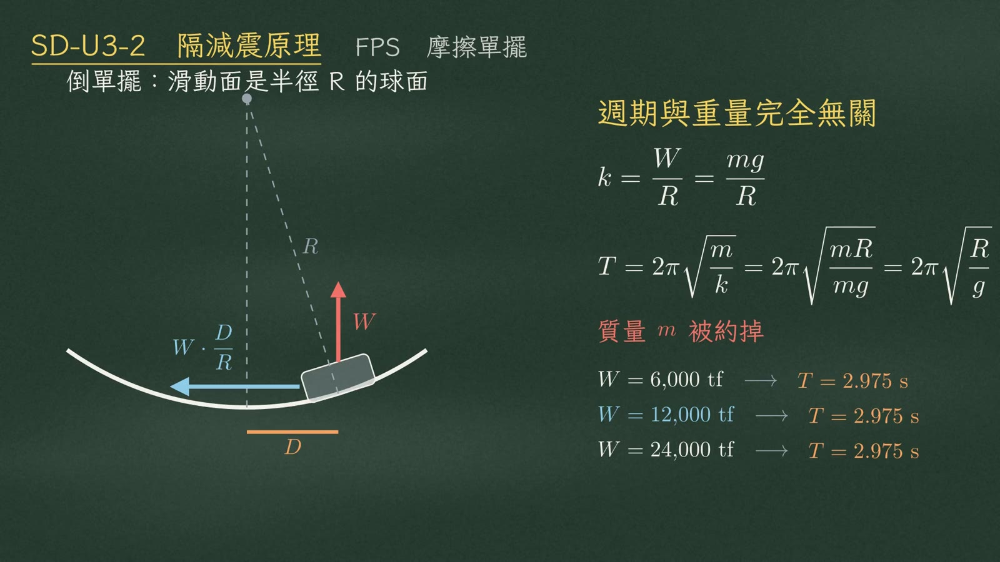
倒單擺幾何（藍＝回復力 \(W\cdot D/R\)）；右：質量 \(m\) 被約掉影片 6:42
FPS 最反直覺、也最常考的性質：單擺週期和重量完全無關。
$$k = \frac{W}{R} = \frac{mg}{R}\quad\Rightarrow\quad T = 2\pi\sqrt{\frac{m}{k}} = 2\pi\sqrt{\frac{mR}{mg}} = 2\pi\sqrt{\frac{R}{g}}$$
質量 \(m\) 被約掉。\(R = 220\ \text{cm}\)，不管 \(W\) 是 6,000、12,000 還是 24,000 tf，週期都是 2.975 s。
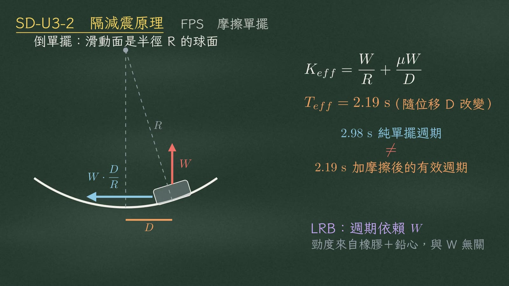
加了摩擦項後的 \(K_{eff}\)，有效週期隨位移改變；底部：LRB 週期依賴 W影片 7:07
$$K_{eff} = \frac{W}{R} + \frac{\mu W}{D}\quad\Rightarrow\quad T_{eff} = 2.19\ \text{s}\ (\text{隨位移 }D\text{ 改變})$$
注意2.98 s 是純單擺週期；2.19 s 是加摩擦後的有效週期。這兩個週期不是同一個東西。
LRB 則不同，週期依賴重量，因為它的勁度是橡膠和鉛心給的，和 \(W\) 無關。
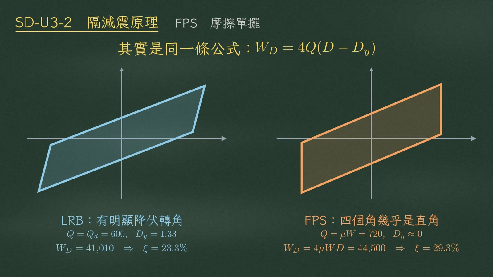
LRB：有明顯降伏轉角；FPS：四個角幾乎是直角——同一條 \(W_D\) 公式影片 7:39
其實兩種支承是同一條公式：
$$W_D = 4Q(D-D_y)$$
| 支承 | \(Q\) | \(D_y\) | \(W_D\)（tf·cm） | \(\xi\) |
|---|
| LRB | 鉛心特徵強度 600 | 1.33 cm，不可忽略 | 41,010 | 23.3% |
| FPS | 摩擦力 \(\mu W = 720\) | 起滑位移 ≈ 0 | \(4\mu W D\) ≈ 44,500 | 29.3% |
08迭代：找不動點
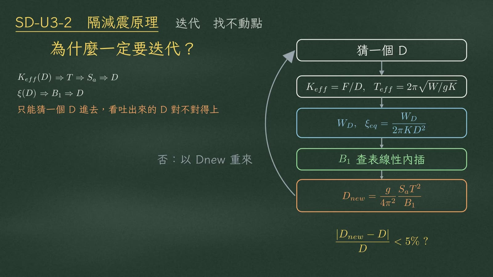
迭代流程：猜 D → \(K_{eff}\)、\(T_{eff}\) → \(W_D\)、\(\xi\) → \(B_1\) → \(D_{new}\) → 誤差 < 5%？影片 8:10
為什麼一定要迭代？\(K_{eff}\) 是 \(D\) 的函數，所以 \(T\) 也是；\(T\) 變，\(S_a\) 變，\(D\) 就變；阻尼比變，\(B_1\) 變，\(D\) 又變。只能先猜一個 \(D\) 進去，看吐出來的 \(D\) 對不對得上。
流程是：猜 \(D\) → 算 \(K_{eff}\) 和 \(T_{eff}\) → 算 \(W_D\) 和阻尼比 → 內插 \(B_1\) → 回算新位移：
$$D_{new} = \frac{g}{4\pi^2}\cdot\frac{S_a\,T^2}{B_1},\qquad \frac{|D_{new}-D|}{D} < 5\%\ ?$$
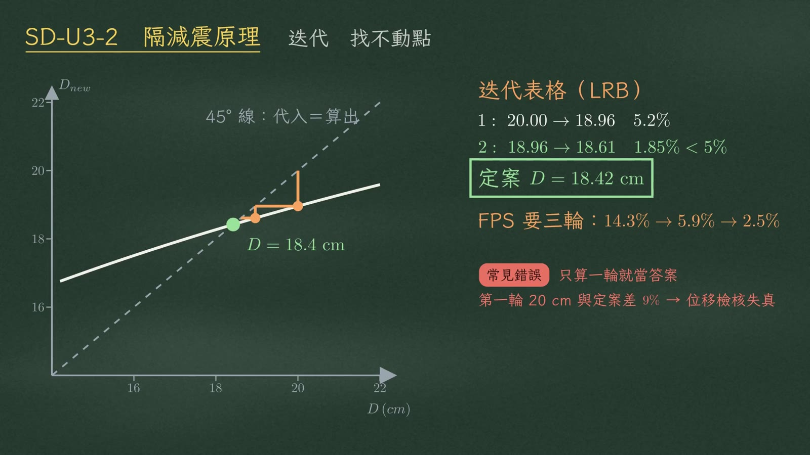
45° 線＝代入等於算出；橘階梯 20→18.96→18.61，綠點＝不動點 18.4 cm影片 8:44
| LRB | 代入 D (cm) | 算出 Dnew (cm) | 誤差 |
|---|
| 第 1 輪 | 20.00 | 18.96 | 5.2% |
| 第 2 輪 | 18.96 | 18.61 | 1.85% < 5% → 收斂 |
| 定案 | \(D = 18.42\ \text{cm}\) |
FPS 要三輪，誤差從 14.3%、5.9%，降到 2.5%。
常見錯誤只算一輪就把 \(D\) 當答案。第一輪的 20 cm 和定案差 9%，位移檢核整個失真。
09B1：查表內插
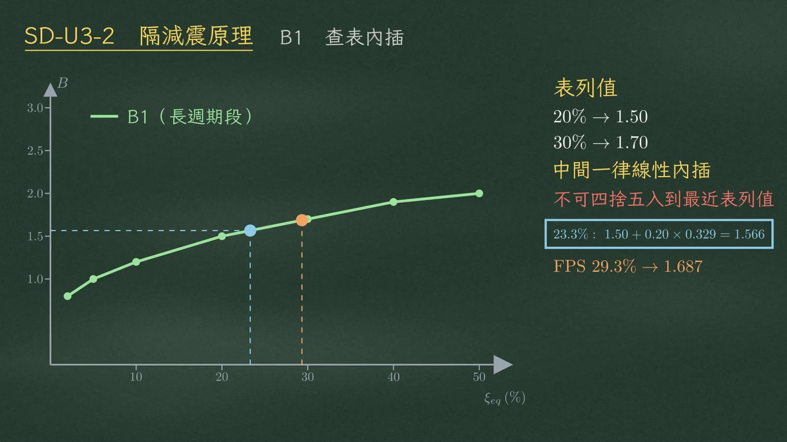
B1（長週期段）曲線；藍點 23.3% → 1.566、橘點 29.3% → 1.687影片 9:09
阻尼比不是 5% 時，查 \(B_1\)。表列值：20% 對 1.50，30% 對 1.70，中間一律線性內插，不可四捨五入到最近的表列值。
$$\xi = 23.3\%:\ \ B_1 = 1.50 + 0.20\times0.329 = 1.566\qquad\text{FPS }\ \xi = 29.3\%:\ \ B_1 = 1.687$$
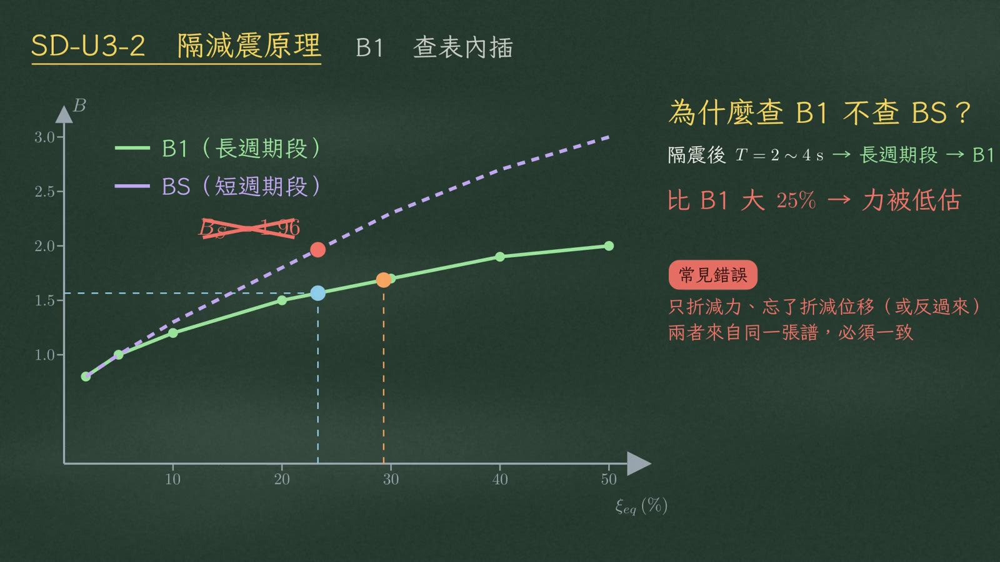
紫虛線＝BS（短週期段）：查錯會得 1.96影片 9:37
為什麼查 \(B_1\)，不查 \(B_S\)？隔震後週期落在 2～4 秒，屬於長週期段，一律查 \(B_1\)。
常見錯誤 ①查成短週期段的 \(B_S\)：23.3% 會得到 1.96，比 \(B_1\) 大兩成五，力被低估。
常見錯誤 ②只把力折減，忘了位移也要折減，或反過來。兩者來自同一張譜，必須一致。
10LRB vs FPS
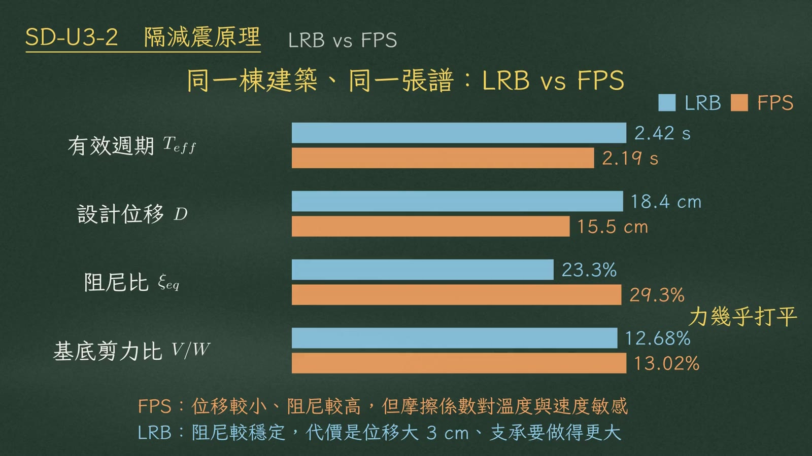
同一棟建築、同一張譜：藍＝LRB、橘＝FPS影片 10:15
| 指標 | LRB | FPS |
|---|
| 有效週期 \(T_{eff}\) | 2.42 s | 2.19 s |
| 設計位移 \(D\) | 18.4 cm | 15.5 cm |
| 阻尼比 \(\xi_{eq}\) | 23.3% | 29.3% |
| 基底剪力比 \(V/W\) | 12.68% | 13.02%（力幾乎打平） |
取捨FPS 位移較小、阻尼較高，但摩擦係數對溫度與速度敏感；LRB 阻尼較穩定，代價是位移大 3 cm，支承要做得更大。
11消能：FVD 速度型
接下來是消能減震：不隔震，直接在斜撐裝阻尼器。速度型的液態黏滯阻尼器 FVD，最大的優點是：只加阻尼、不加勁度，週期完全不變。物理根據在相位：阻尼力和速度成正比，和位移差 90°，在最大位移那一刻，阻尼力恰好是零。
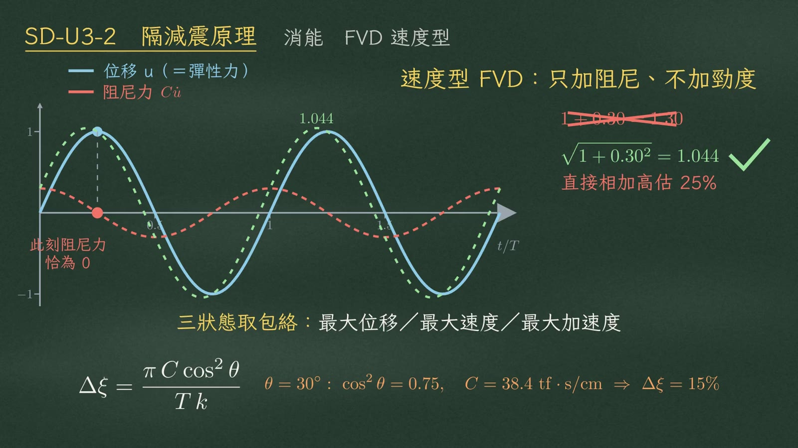
藍＝位移 u（＝彈性力）；紅虛＝阻尼力 \(C\dot u\)（最大位移處為 0）；綠虛＝合力，峰值 1.044影片 11:15
所以阻尼力和彈性力的峰值不能直接相加：
| 算法 | 峰值 | |
|---|
| 直接相加 | \(1 + 0.30 = 1.30\) | ✘ 高估兩成五 |
| 實際峰值 | \(\sqrt{1+0.30^2} = 1.044\) | ✔ |
設計檢核三個狀態取包絡：最大位移、最大速度、最大加速度。
斜撐角度 30°，有效阻尼要乘 \(\cos^2\theta = 0.75\)——力投影一次、位移投影一次：
$$\Delta\xi = \frac{\pi\,C\cos^2\theta}{T\,k},\qquad \theta = 30^\circ:\ \cos^2\theta = 0.75,\quad C = 38.4\ \text{tf}\cdot\text{s/cm}\ \Rightarrow\ \Delta\xi = 15\%$$
12FVD vs BRB
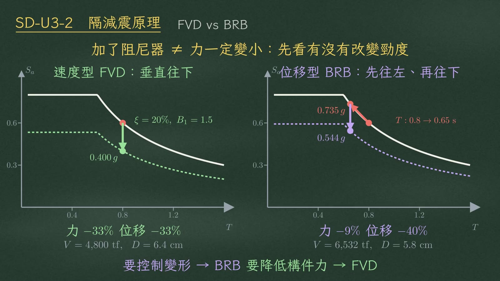
左：FVD 垂直往下；右：BRB 先往左、再往下影片 12:08
加了阻尼器，不等於力一定變小——先看它有沒有同時改變勁度。
| 類型 | 譜上的走法 | \(S_a\) | 結果 |
|---|
| 速度型 FVD | 週期 0.8 s 不動；\(\xi\) 加到 20%，\(B_1 = 1.5\) | 0.600 → 0.400 | \(V = 4{,}800\ \text{tf}\)、\(D = 6.4\ \text{cm}\)；力與位移都 −33% |
| 位移型 BRB | 加 50% 勁度，週期 0.8 → 0.65 s 往左走；5% 譜 \(S_a\) 反而漲到 0.735，再 ÷\(B_1 = 1.35\) | 0.600 → 0.735 → 0.544 | \(V = 6{,}532\ \text{tf}\)、\(D = 5.8\ \text{cm}\)；力只 −9%，位移 −40% |
選擇要控制變形 → 選 BRB；要降低構件力 → 選 FVD。
13TMD：調頻質量阻尼器
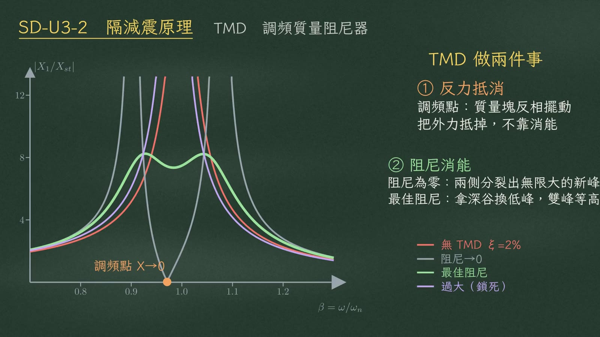
紅＝無 TMD；灰＝阻尼→0（雙峰、調頻點→0）；綠＝最佳阻尼（雙峰等高）；紫＝過大（鎖死）影片 12:35
最後是調頻質量阻尼器 TMD，它做兩件事：
- 反力抵消：在調頻點，質量塊反相擺動，把外力抵掉，靠的不是消能。
- 阻尼消能：阻尼為零時抵消最乾淨，卻在兩側分裂出兩個無限大的新共振峰；最佳阻尼，就是拿深谷去換低峰，把雙峰壓到等高。
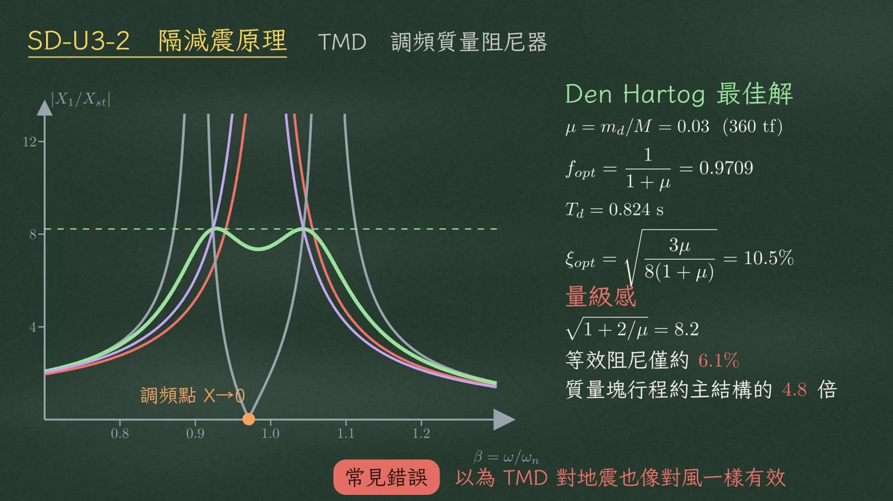
Den Hartog 最佳解；虛線＝雙峰等高 8.2影片 13:12
Den Hartog 最佳解：
$$\mu = \frac{m_d}{M} = 0.03\ (360\ \text{tf}),\qquad f_{opt} = \frac{1}{1+\mu} = 0.9709,\qquad T_d = 0.824\ \text{s}$$
$$\xi_{opt} = \sqrt{\frac{3\mu}{8(1+\mu)}} = 10.5\%$$
調頻目標是主結構原本的頻率。量級感：
$$\text{雙峰高度}=\sqrt{1+\frac{2}{\mu}} = 8.2,\qquad \text{折算等效阻尼僅約 }6.1\%,\qquad \text{質量塊行程約主結構的 }4.8\text{ 倍}$$
常見錯誤以為 TMD 對地震也像對風一樣有效。
14總結：取捨地圖與三把尺
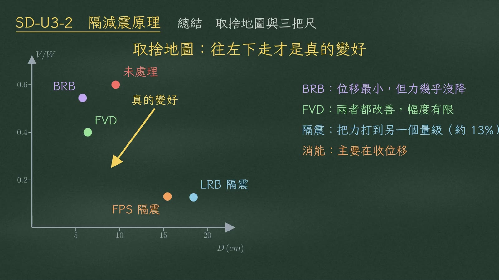
橫軸位移 D、縱軸 V/W：往左下走才是真的變好影片 13:37
先看取捨地圖：橫軸位移，縱軸力，往左下走才是真的變好。
| 方案 | D (cm) | V/W | 評語 |
|---|
| 未處理 | 9.5 | 0.60 | 起點 |
| BRB | 5.8 | 0.544 | 位移最小，但力幾乎沒降 |
| FVD | 6.4 | 0.40 | 兩者都改善，但幅度有限 |
| FPS 隔震 | 15.5 | 0.130 | 把力打到另一個量級（約 13%） |
| LRB 隔震 | 18.4 | 0.127 |
隔震把力打到另一個量級，消能主要在收位移。
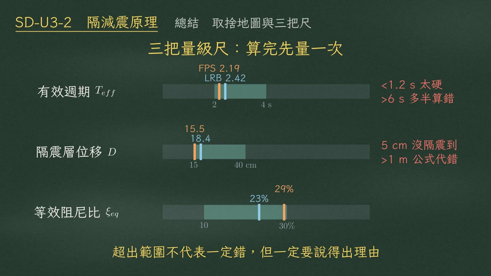
三把量級尺：灰帶＝合理範圍，藍＝LRB、橘＝FPS影片 14:06
算完先用三把量級尺量一次：
| 量級尺 | 合理範圍 | 警訊 |
|---|
| 有效週期 \(T_{eff}\) | 約 2～4 s | < 1.2 s 隔震層太硬；> 6 s 多半算錯 |
| 隔震層位移 \(D\) | 約 15～40 cm | 只有 5 cm＝根本沒隔震到；超過 1 m＝公式代錯 |
| 等效阻尼比 \(\xi_{eq}\) | 約 10%～30% | |
檢查超出範圍不代表一定錯，但一定要說得出理由。
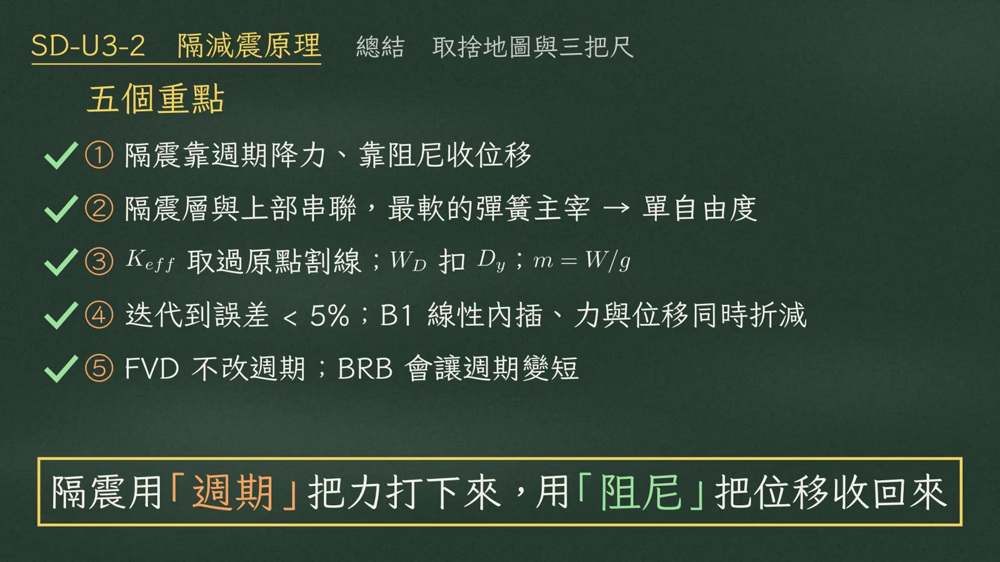
五個重點與全片一句話影片 14:46
五個重點
- 隔震靠週期降力，靠阻尼收位移。
- 隔震層和上部結構串聯，最軟的彈簧主宰，所以可用單自由度。
- \(K_{eff}\) 取過原點的割線，\(W_D\) 記得扣 \(D_y\)，質量是 \(W/g\)。
- 迭代到誤差小於 5%，\(B_1\) 線性內插、力和位移同時折減。
- FVD 不改週期，BRB 會讓週期變短。
一句話：隔震用週期把力打下來，用阻尼把位移收回來。